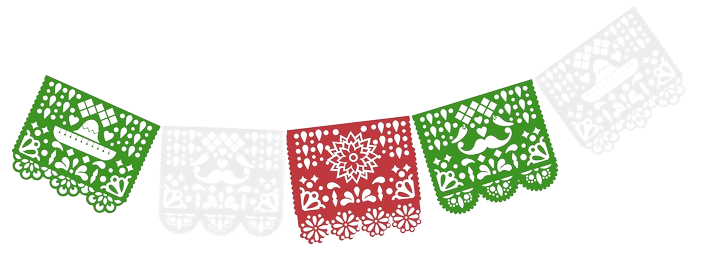
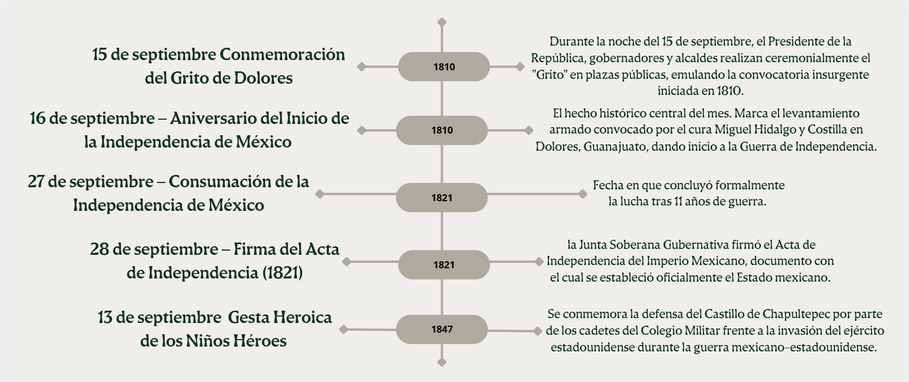

| LUNES | MARTES | MIÉRCOLES | JUEVES | VIERNES | SÁBADO | DOMINGO |
|---|---|---|---|---|---|---|
| 1 | 2 | 3 | 4 | 5 | 6 | |
| 7 | 8 | 9 | 10 | 11 | 12 | 13
DIA DE LOS NIÑOS HEROES |
| 14 | 15
GRITO DE INDEPENDENCIA |
16
INDEPENDENCIA DE MEXICO |
17 | 18 | 19 | 20 |
| 21 | 22 | 23 | 24 | 25 | 26 | 27
CONSUMACION DE LA INDEPENDENCIA |
| 28
FIRMA DEL ACTA DE INDEPENDENCIA |
29 | 30 |
